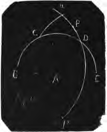

Libro III § 66: Bisezione della Distanza (Soluzione V)¶
Lorenzo Mascheroni (La Geometria del Compasso, Pavia 1797, § 66, pp. 33–34)
§ 66. Problema. Dividere per metà una distanza data \(AB\).
Soluzione V. Col raggio \(AB\), centro \(A\) (fig. 14) descritta la semicirconferenza \(BCDE\) (§ 64); col centro \(E\), raggio \(EB\) descritto l’arco indefinito \(PBp\); col centro \(B\), raggio \(BA\) tagliando quest’arco in \(P\) e \(p\); con questi centri \(P\) e \(p\), e collo stesso raggio \(BA\) si descrivano due archi, che si taglino in \(M\). Sarà \(M\) il punto cercato.


Dimostrazione. Il punto \(M\) sarà sulla \(BE\) (§ 13). Essendo poi simili i due triangoli isosceli \(\triangle PBM, \triangle PBE\) a cagione d’un angolo alla base comune in \(B\) (5 e 32, lib. I; 4, lib. VI); sarà:
quindi (17, lib. VI):
ossia:
quindi dividendo per \(AB\), risulta:
ossia \(BM = \frac{1}{2} AB\). Dunque il punto \(M\) divide per metà la distanza data \(AB\).